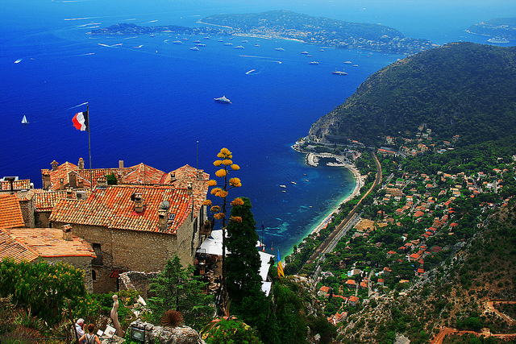

Eze

Èze is a fortified medieval village that sits 430 meters (1,400) feet above sea level, overlooking the beautiful Mediterranean Sea. With its lovely villas covered in bougainvillea and cobblestone streets, Eze is a charming and very photogenic town. In Eze, visitors can tour two famous perfumeries, the Galimard and Fragonard, visit a 12th-century fortified castle or Le Jardin Exotique d’Eze, a garden filled with exotic plants and lovely statues that also offers some of the best views of the surrounding area.
|